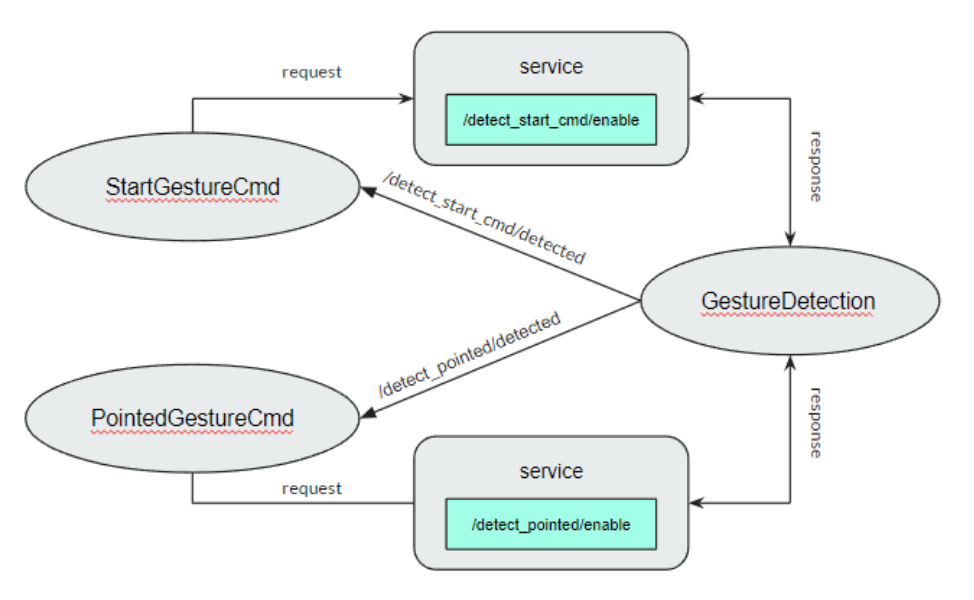

Gesture Perception¶
Overview¶
The purpose of gesture perceptual application for sensing human behavior, living with the human the robot must know human behavior and interact with humans. The posture can specify many things whether emotion, desire, or action so gesture perception is necessary for living with humans. And the minor purpose is to command the robot as we say the posture can specify the desire. The basic way to command the robot is the posture and we can adjust the special command following the desire of the developer however it depends on the suitability to use in real life
ros2 system architecture¶
{kind=link}
The gesture detection node consists of 2 services for calling from the behavior root node while the detect sequence is occurs
Installation¶
CV bridge LTS on ubuntu
sudo apt-get install ros-(ROS version name)-cv-bridge sudo apt-get install ros-(ROS version name)-vision-opencv
Tensorflow==2.9.1
see the installation reference on this link: https://www.tensorflow.org/install
Example¶
First clone the repository from GitHub following this command
git clone https://github.com/MBSE-2022-1/Software-Team.git -b gesture-perception
Build the package (navigate to workspace directory before build)
colcon build --symlink-install
Note
Always navigate to workspace directory before build and symlink-install is necessary
Run the package
ros2 run gesture_detection gesturedetection.py
Open realsense camera
ros2 launch realsense2_camera rs_launch.py \ rgb_camera.profile:=640x480x30 \ depth_module.profile:=640x480x30 \ pointcloud.enable:=true
Call service
ros2 service call <service name> std_srvs/srv/Empty
API Reference¶

The gesture detection function consist of image subscriber, extract image feature, preprocessing and classifier model
Mediapipe
the image feature is extracted by mediapipe library Mediapipe hand landmarks are composed of x, y, and z. x and y are normalized to [0.0, 1.0] by the image width and height respectively. z represents the landmark depth with the depth at the wrist being the origin, and the smaller the value the closer the landmark is to the camera. The magnitude of z uses roughly the same scale as x. The preprocessing function will set the wrist position as the origin point and then subtract the other 20 points from the origin point then normalize the position
See the reference API here: https://google.github.io/mediapipe/solutions/hands.html#python-solution-api
preprocessing function
- .. calc_landmark_list(self, landmarks)::¶
The hand landmarks from mediapipe are normalized [0.0, 1.0] this function will convert the normalized value to the picture position
- Parameters:
landmarks: normalize hand landmarks from the result of mediapipe
- Return:
The same size of the input array respective to the image size with format [x, y, z]
- .. pre_process_landmark(self, landmark_list)::¶
This function using for preprocessing the hand landmark by subtracting all hand keypoint with the wrist position value and chaining the position x, y and z together
- Parameters:
landmark_list: list of hand landmarks respective to the image size in the format [x, y, z]
- Return:
a dimension list of scale hand landmarks x follow by y and z position
- .. calc_bounding_rect(self, landmarks)::¶
this function calculates the landmarks from mediapipe for the bounding box for debugging with the image
- Parameters:
landmarks: normalize hand landmarks from the result of mediapipe
- Return:
[x, y, x + w, y + h] respectively to the image size
Classifier model architecture

Input: 42 length arrays
Output: hand class [‘Open’, ‘Start_cmd’, ‘Pointer’, ‘Close’, ‘OK’]
Problem and future plan¶
Gesture perception tasks on robocup@home
Task 5.1 carry my luggage
Detect start command
Detect pointing position
Task 5.3 Farewell
Detect tired user
Detect calling and signal to leave
Task 6.4 Hand Me That
Detect pointing position
Task 6.6 Restaurant
Detect calling and waving
Task 6.7 Smoothie Chef
Learning how to prepare the smoothie and then follow
Task 6.8 Stickler for the Rules
Identify rule breaker
Note
This semester we are only planning for task 5.1